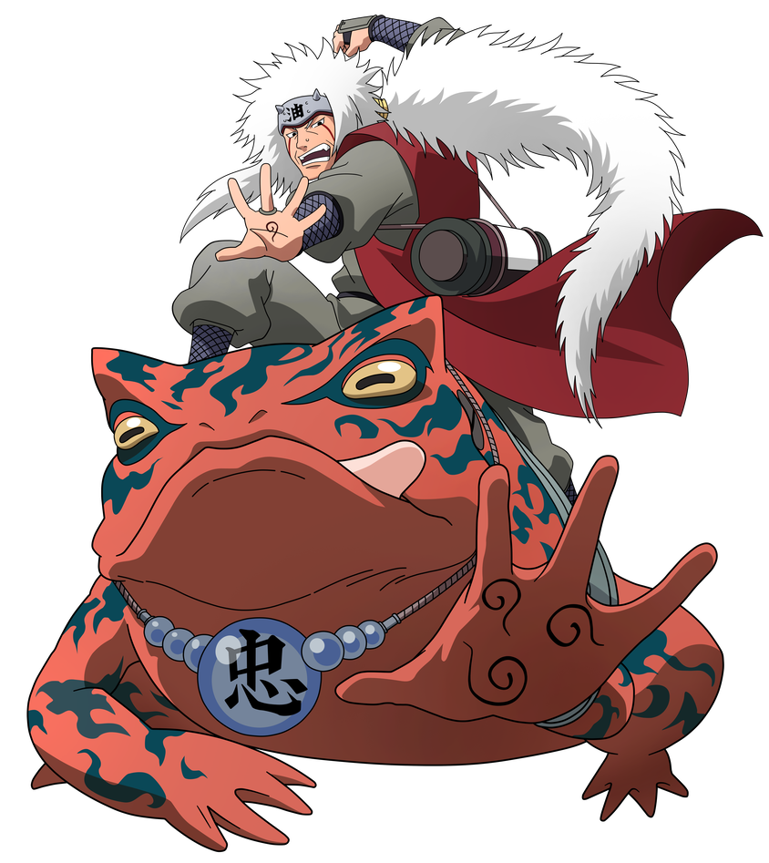

Jiraiya fue uno de los tres legendarios Sannin y maestro de Naruto. Era conocido como el "Sabio Pervertido", pero también fue un gran ninja, escritor y mentor. Entrenó a Naruto y creyó en él cuando pocos lo hacían. Su sacrificio fue uno de los momentos más impactantes del anime.
⬅ Anterior Siguiente ➡